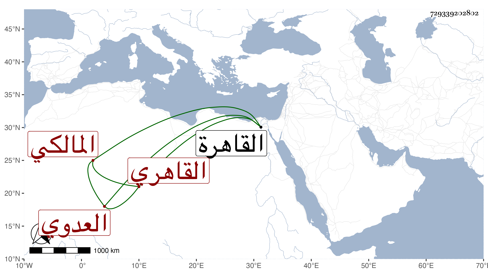

0902Sakhawi.DawLamic.ITO20230111-ara1.EIS1600.729339202802
Biography ID: 729339202802
46
محمد بن علي بن محمد بن عبد الرحمن بن بلال الشمس العدوي القاهري المالكي جدي لأمي ووالد علي الماضي ويعرف بابن نديبة بضم النون ثم مهملة مفتوحة بعدها مثناة تحتانية ثم موحدة تصغير ندب لكون قريبة لأمه كانت فيما بلغني كثيرة الندب . ولد قريب التسعين وسبعمائة بالقاهرة ونشأ بها حفظ القرآن وابن الحاجب الفرعي وغيرهما عند الفقيه عثمان القمني ، وعرض على جماعة وتفقه بالجمال الاقفهسي والحناوي وعنه أخذ العربية وكذا أخذ في الفقه وغيره من الفنون عن البساطي وانتفع في العربية أيضا بالفخر عثمان والشمس البرماويين وسمع الحديث على ابن الكوبك فمن قلبه وتكسب بالشهادة دهرا ، وكان ثقة ضابطا خيرا متواضعا متوددا حسن الشكالة والطريقة فاضلا مفيدا معتمدا حتى كان الجمال الزيتوني يحب الارتفاق به وكذا بلغني أن القاياتي كان يشهد معه حين سكناه بالقرب منه وعرض عليه القضاء فأبى ، وحج مرارا وجاور في بعضها . مات في صفر سنة خمس وأربعين ودفن بحوش البيبرسية عند أخيه عبد الرحمن وكان أحد صوفيتها رحمه الله وإيانا .
